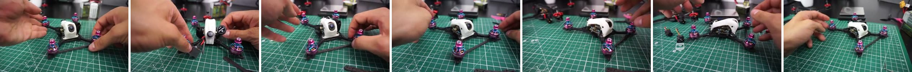

One example per task type, with its annotation as released, for every dataset the project trains on or evaluates against, and the size of each. Clips are short excerpts re-encoded at 480p; the annotation text is verbatim.
User-written chapters (timestamp and title) scraped from YouTube videos; tasks derived from them are chapter generation, chapter generation with given boundaries, and chapter grounding.
per video: duration, title, description, chapters as {start second: title}; ASR transcripts separately
Videos
YouTube ids only in the original release; the Chapter-Llama release redistributes the videos of its subsets
Access
chapter file (2 GB JSON) and videos are public on the Hub
Statistics
Paper totals
817K videos, 7M chapters
Subsets on the Hub
s/m/l = short/medium/long validation subsets of 100 videos each, from the Chapter-Llama release of VidChapters-7M
Subset
Videos
Chapters
Chapters per video (median)
Video length
l100_val
100
1,041
8
mean 2568 s, median 2582 s, max 3598 s
m100_val
100
807
7
mean 1245 s, median 1214 s, max 1763 s
s100_val
100
640
6
mean 498 s, median 498 s, max 898 s
Examples, one per task type
chapter boundaries as a frame strip
7 user-written chapters
s100_val subset; YouTube id Y4TCLwaU_pc
Title
5 Final Cut Pro Plugins Every Filmmaker Needs
Duration
15 min
Chapters
0:00 Intro
1:35 Adding Plugins
2:09 Adjustment Layers
3:30 Txt Animator - www.ezracohen.tv
5:12 Motion VFX - www.motionvfx.com
6:36 Fx Factory - www.fxfactory.com
11:00 Film Convert - www.filmconvert.com/nitrate

chapter boundaries as a frame strip
7 user-written chapters
m100_val subset; YouTube id 9audcI9oC18
Title
New 3" racing frame design: Gatehunter SLS3
Duration
20 min
Chapters
0:28 frame concept
4:00 build and components
7:12 props
8:20 PID tuning
10:36 Nano cams
13:43 VTX
19:35 crashes
chapter boundaries as a frame strip
7 user-written chapters
l100_val subset; YouTube id 4Eqa_vu_OiA
Title
ASMR S E N S I T I V E Brain Scratch (No Talking)
Duration
39 min
Chapters
0:00 preview
1:36 silicon spoolie
8:10 hands
13:59 green gardening gloves
18:47 beauty blenders
25:45 toothbrush
32:32 fishnet gloves
Ego4D
3,670 hours of egocentric video with dense narrations and benchmark annotations: episodic memory (NLQ, MQ, VQ), hands and objects, AV diarization, social, forecasting, and the later Goal-Step steps.
Dense timestamped sentences written by annotators; the paper's examples.
Example
“#C opens the washing-machine”, “#C picks up the detergent”, “#C checks mobile while #X drives the car”, “#C passes a card to #Y”
no video: license agreement required
Episodic memory, natural language query (NLQ)
Each query comes with the clip and the answer interval (clip_start_sec, clip_end_sec) and a query template.
Example
“What did I pick up before leaving the party?”, “What did I put in the drawer?”, “When did I read to my children?”
no video: license agreement required
Episodic memory, visual query (VQ)
A crop of the object is the query; the answer is its last occurrence in the clip.
Example
“Where is this [picture of my keys]?”
no video: license agreement required
Episodic memory, moments (MQ)
moments_<split>.json
Example
110 activity categories with start and end times, about 22.2k instances over 328.7 hours.
no video: license agreement required
Hands and objects
fho_*.json
Example
88,585 clips of 8 s with the point of no return of a state change, pre- and post-condition frames, and hand boxes.
no video: license agreement required
Forecasting
fho_sta_*.json, fho_lta_*.json
Example
Short-term object interaction anticipation (what and when) and long-term action anticipation over 110.5 hours.
no video: license agreement required
AV diarization and social
av_*.json
Example
Who is speaking when, transcripts, and who is looking at or talking to the camera wearer; 572 clips, 47.7 hours.
LLaVA-Video-178K
Synthetic instruction data for video LLMs: a detailed caption, multi-turn open-ended QA and multiple-choice QA for each clip, generated with GPT-4o over clips from academic datasets and YouTube.
userExplore the thematic and visual aspects of the video comprehensively.
assistantThe video begins with a view of a cozy room featuring a bed adorned with a green bedspread, several pillows in blue and patterned designs, a pink bag, a remote control, and some magazines or newspapers. The wall behind the bed is decorated with a calendar and some papers pinned to it. A person wearing a dark green hoodie and blue jeans enters the scene and sits on the bed. They put on a pair of blue and white slippers, adjust their position, and reach for the remote control, appearing ready to use it.
The scene continues with the same person sitting on the bed, surrounded by the same items. They adjust their position, lie down, and reach towards the pink bag, searching for something inside. After a few moments, they retrieve a small bowl from the bag and sit back up, placing the bowl on the bed beside them. The person then holds a small object in their hand, examining it closely.
The video wraps up with the person still sitting on the bed, now holding the small object and examining it closely. The room's details remain consistent, with the calendar and papers on the wall, and the various items around the bed. The person places the small object on the bed beside them and reaches for the remote control, seemingly ready to use it.
the whole training clip
caption
source NextQA; 0_30_s_academic_v0_1
userProvide an exhaustive description of the video content.
assistantThe video features a heartwarming scene of a child in a cozy indoor setting, celebrating their first Christmas. The child is dressed in green pajamas with a white bib and a festive red and white Santa hat embroidered with the text 'My First Christmas' and a small Christmas tree. The room is filled with various toys, including a red toy fire truck, a colorful activity cube, and a blue toy bin, all illuminated by natural light streaming through the windows. The dining area with a table and chairs is visible in the background.
The child is seen moving around the room, adjusting the Santa hat on their head, and exploring their surroundings. The living area includes a black couch and a white cabinet, adding to the cozy atmosphere. The child eventually gravitates towards the toys, engaging with them and displaying a sense of curiosity and joy.
In the final part of the video, the child is shown crouching and playing with a yellow toy xylophone on the floor. After a moment of focused play, the child stands up and begins to walk around the room, continuing their exploration. The video wraps up with the child walking towards the dining area, moving away from the toys, capturing a tender moment of discovery and festive cheer.
the whole training clip
caption
source activitynet; 0_30_s_academic_v0_1
userNarrate the video's unfolding events in a descriptive manner.
assistantThe video begins with a nighttime scene at a rodeo arena, where several people, some wearing cowboy hats, are gathered around a fenced area. A man in a white shirt and cowboy hat prepares to ride a horse. As he exits the gate, he skillfully chases and ropes a calf while riding the horse. The man then dismounts and runs towards the calf, holding the rope to secure it. The background is illuminated by artificial lights, with other spectators and participants watching the event.
The scene continues with the man in the white shirt and cowboy hat securing the roped calf. Kneeling on the ground, he holds the calf down while several spectators and participants, some standing and others sitting on the bleachers, observe. A horse, still attached to the rope, stands nearby. The man successfully ties the calf's legs together and stands up, signaling the completion of his task. He then walks away from the calf, with the audience continuing to watch the event.
The final scene shows the man in the white shirt and cowboy hat standing near the horse, which remains attached to the rope tied to the calf lying on the ground. Another man, also in a cowboy hat, adjusts the saddle of the horse. The background features several spectators and participants, some sitting on the bleachers and others standing. The man in the white shirt mounts the horse, preparing to continue the rodeo event. The video concludes with the man on the horse, ready to proceed, while the calf remains tied on the ground and the spectators observe the scene.
the whole training clip
caption
source ego4d; 0_30_s_academic_v0_1
userElaborate on all aspects of the video you are viewing.
assistantThe video begins with a person standing outdoors on a patch of dirt and grass, dressed in a white shirt with a graphic design and tan pants. They are holding a small digital scale with a blue screen. Scattered around them are various items, including a large black bucket, a white plastic container, a white cup, a green bottle, and a packet of 'Тройной' (Troynoy) detergent. The person places the digital scale on the ground and starts measuring a substance, carefully pouring it into a small container on the scale to ensure the correct measurement. The scene develops as the person adjusts the amount of the substance on the scale, likely aiming for precision.
The perspective shifts to a top-down view of the same person, now sitting on the same patch of dirt and grass. The digital scale with the blue screen is still on the ground, surrounded by the same scattered items. The person is now measuring a green liquid substance using the digital scale, adjusting the amount in the small container to achieve the correct measurement. They then pick up the packet of 'Тройной' (Troynoy) detergent and begin pouring its contents into the container on the scale, focusing on achieving a precise measurement. The video wraps up with the person continuing to pour the detergent, emphasizing the meticulous process of measurement.
the whole training clip
caption
source youcook2; 0_30_s_academic_v0_1
userDescribe every scene and its significance in the video.
assistantThe video features a woman in a kitchen, dressed in a green long-sleeved shirt, engaged in the process of preparing food. The kitchen is well-equipped with wooden cabinets, a black countertop, and a window that offers a view of lush greenery outside. Spread across the counter are various kitchen utensils and ingredients, including a red pot, a measuring cup, a whisk, and containers filled with chopped ingredients. Decorative elements such as a basket of bread and a vase with flowers add a homely touch to the setting. The woman is seen stirring a mixture in a large transparent bowl with an orange spatula. She continues to mix the contents diligently, surrounded by the organized chaos of her cooking preparations. As she stirs, the scene remains consistent, with the same kitchen setup and decorative elements. Eventually, she stops stirring and lifts the bowl, seemingly ready to transfer the mixture. She glances around the kitchen, possibly contemplating her next step in the cooking process, bringing a sense of anticipation and focus to the culinary task at hand.
the whole training clip
open-ended
source Charades; 0_30_s_academic_v0_1
userWhat is the setting of the video?
assistantThe video is set in a cozy living room with wooden flooring, a red armchair, and a table with chairs in the background.
userWho are the main characters in the video?
assistantThe main characters are a person in a red shirt and a black dog.
userWhat action does the person in the red shirt take during the video?
assistantThe person in the red shirt stands up, walks towards the dining area, picks up a small electronic device, and then focuses on it intently.
5 turns in total; the first 3 shown
the whole training clip
open-ended
source NextQA; 0_30_s_academic_v0_1
userIs the cowboy wearing a hat?
assistantYes.
userWhat is the main activity being showcased in the video?
assistantThe main activity being showcased is the cowboy riding a horse and demonstrating his riding skills at a rodeo event.
userWhat is the first action the cowboy performs in the video?
assistantThe first action the cowboy performs is riding a horse at high speed at the rodeo event.
5 turns in total; the first 3 shown
the whole training clip
open-ended
source activitynet; 0_30_s_academic_v0_1
userWhat does the opening text in the video say?
assistantThe opening text says 'Border Pawtrol Disc Dog Team Jim Fox.'
userWhere does the video take place?
assistantThe video takes place in an outdoor setting with a grassy field and trees in the background.
userWho is featured in the video along with Jim Fox?
assistantA black and white dog is featured in the video along with Jim Fox.
5 turns in total; the first 3 shown
the whole training clip
open-ended
source ego4d; 0_30_s_academic_v0_1
userWhere does the video take place?
assistantThe video takes place outdoors on a patch of dirt and grass.
userWhat is the person in the video wearing?
assistantThe person is wearing a white shirt with a graphic design and tan pants.
userWhat items are scattered around the person in the video?
assistantScattered around the person are a large black bucket, a white plastic container, a white cup, a green bottle, and a packet of 'Тройной' (Troynoy) detergent.
5 turns in total; the first 3 shown
the whole training clip
open-ended
source youcook2; 0_30_s_academic_v0_1
userHow many main ingredients are visible in the wok?
assistantTwo main ingredients are visible in the wok: the red and orange sauce and the marinated chicken pieces.
userIs the sauce in the wok bubbling?
assistantYes.
userHow are the chicken pieces added to the wok?
assistantThe chicken pieces are added one by one, covering the surface of the sauce.
5 turns in total; the first 3 shown
the whole training clip
multiple-choice
source Charades; 0_30_s_academic_v0_1
userWhere does the video take place?
A. A living room
B. A garage
C. A laundry room
D. A kitchen
Please provide your answer by stating the letter followed by the full option.
assistantC. A laundry room.
userWhat is the person wearing in the video?
A. A white dress
B. A red shirt and a green skirt
C. A blue shirt and jeans
D. A black suit
Please provide your answer by stating the letter followed by the full option.
assistantB. A red shirt and a green skirt.
userWhat does the person do after entering the room?
A. They sit down on a chair
B. They inspect the mess on the floor
C. They turn on the washing machine
D. They start cleaning the room
Please provide your answer by stating the letter followed by the full option.
assistantB. They inspect the mess on the floor.
5 turns in total; the first 3 shown
the whole training clip
multiple-choice
source NextQA; 0_30_s_academic_v0_1
userWhat is the main focus of the video?
A. A dog eating food
B. A dog playing with a ball
C. A dog interacting with people in a parking lot
D. A dog sleeping
Please respond with only the letter of the correct answer.
assistantC.
userIn which direction does the dog chase the person?
A. To the right of the camera
B. Towards the camera
C. Away from the camera
D. To the left of the camera
Please respond with only the letter of the correct answer.
assistantC.
userHow does the camera move in the video?
A. The camera moves away from the dog
B. The camera zooms in on the dog
C. The camera stays stationary
D. The camera follows the dog
Please provide your answer by stating the letter followed by the full option.
assistantC. The camera stays stationary.
5 turns in total; the first 3 shown
the whole training clip
multiple-choice
source youcook2; 0_30_s_academic_v0_1
userWhat happens after the sauce is poured over the chicken strips?
A. The chicken strips are placed on the skewers
B. The bowl is set aside and a red whisk is used to mix the chicken strips
C. The vegetables are chopped
D. The hand continues to whisk the sauce
Please respond with only the letter of the correct answer.
assistantB.
userWhere are the raw chicken strips placed in the video?
A. On a cutting board
B. In a clear glass bowl
C. In a white rectangular dish
D. On a wooden skewer
Please respond with only the letter of the correct answer.
assistantC.
userWhy is the sauce poured over the chicken strips?
A. To marinate the chicken strips
B. To discard the sauce
C. To cook the chicken strips
D. To clean the bowl
Please respond with only the letter of the correct answer.
assistantA.
5 turns in total; the first 3 shown
StreamingBench
Questions asked at a timestamp of a stream: real-time visual understanding (10 tasks), omni-source understanding (4), contextual understanding (2), sequential QA, and proactive output where the model must speak when an event happens.
CSV per subset: question_id, task_type, question, time_stamp, answer, options; proactive rows carry ground_truth_time_stamp and ground_truth_output
Videos
zip archives of 2 to 19 GB on the Hub; the clips here are cut around the question timestamp from the videos of the StreamingBench viewer
Access
public on the Hub
Statistics
Videos
900 (official); the CSV ids name 700 distinct samples across the five subsets
Questions
4,500
Subsets
Real Time Visual Understanding (2,500), Omni Source Understanding (1,000), Contextual Understanding (500), Proactive Output (250), Sequential Question Answering (250)
Video length
real: mean 609 s; omni: mean 536 s; sqa: mean 592 s; proactive: mean 635 s
Task type
Questions
Object Perception
369
Action Perception
352
Text-Rich Understanding
321
Clips Summarize
317
Attribute Perception
312
Misleading Context Recognition
250
Anomaly Context Understanding
250
Emotion Recognition
250
Multimodal Alignment
250
Scene Understanding
250
Source Discrimination
250
Sequential Question Answering
250
Proactive Output
248
Spatial Understanding
246
Counting
188
Event Understanding
159
Causal Reasoning
128
Prospective Reasoning
108
Active Output
2
Examples, one per task type
the 20 s before the question timestamp
Action Recognition
real subset, getting_dressed
Question
What are the helpers doing to the person in the golden robe?
Asked at
0:01:06
A. Applying makeup.
B. Adjusting a braided belt.
C. Polishing their sandals.
D. Fixing their hair.
the 20 s before the question timestamp
Attribute Perception
real subset, video
Question
What type of shirt is the opponent wearing?
Asked at
00:01:11
A. A blue and white patterned shirt.
B. A plain white shir.
C. A yellow patterned shirt.
D. A red checkered shirt.
the 20 s before the question timestamp
Causal Reasoning
real subset, football
Question
Why does the player wearing the number nine red and blue jersey celebrate?
Asked at
00:00:53
A. He saved a goal.
B. He received a pass.
C. He scored a goal.
D. He won a free kick.
the 20 s before the question timestamp
Clips Summarize
real subset, preparation_of_meals
Question
Which of the following best summarizes the actions performed just now?
Asked at
00:00:10
A. The individual took vegetables out of the refrigerator, cleaned them, and arranged them on a plate.
B. The individual retrieved a container with liquid, uncovered it, and began stirring its contents.
C. The individual operated a deep fryer, cooked food, and placed it into a serving dish.
D. The individual brewed coffee, poured it into cups, and served them.
the 20 s before the question timestamp
Counting
real subset, introduction_to_film
Question
How many times in total have movie clips been inserted during this person's explanation so far?
Asked at
00:00:56
A. 1.
B. 3.
C. 4.
D. 0.
the 20 s before the question timestamp
Event Understanding
real subset, football
Question
What is the updated score after the player in number 11 scored a goal?
Asked at
00:02:11
A. 2-0.
B. 3-0.
C. 5-0.
D. 4-0.
the 20 s before the question timestamp
Object Perception
real subset, getting_dressed
Question
What is the person putting on their feet?
Asked at
0:01:30
A. Red boots.
B. Red shoes with a low heel and a strap.
C. Black sneakers.
D. Sandals.
the 20 s before the question timestamp
Prospective Reasoning
real subset, video
Question
What will the camera holder most likely do next?
Asked at
00:01:15
A. Place Four of hearts onto the central pile.
B. Place the Ace of Spades onto the discard pile.
C. Put the Seven of Diamonds onto the foundation stack.
D. Move the King of Clubs to the empty tableau column.
the 20 s before the question timestamp
Spatial Understanding
real subset, cycling
Question
What is the position of the yellow sign and black arrow right now?
Asked at
00:00:54
A. Directly behind the cyclists.
B. On the right side of the road.
C. Directly ahead of the cyclists.
D. On the left side of the road.
the 20 s before the question timestamp
Text-Rich Understanding
real subset, driving
Question
What is currently written on the sign visible in the video?
Asked at
00:00:03
A. START.
B. GO!.
C. MICRO.
D. WHOOP.
the 20 s before the question timestamp
Anomaly Context Understanding
omni subset, car_accident
Question
What unusual event just occurred?
Asked at
00:00:37
A. When A big truck changed lanes on the road, it hit the white car on the right. The white car lost control and drove into the roadside lawn, and finally it turned over seriously.
B. When changing lanes on the road, a large truck hit the black car on the right. The black car lost control and drove into the grass on the side of the road, and finally turned over seriously.
C. A vehicle acting as a camera was driving on the road and struck a white car on the left that had made a sudden right turn.
D. A vehicle acting as a camera lost control while changing lanes from left to right on the road and drove for some time before hitting a black car parked on the side of the road.
the 20 s before the question timestamp
Emotion Recognition
omni subset, movie
Question
What is the current emotion of the man with buzz cut of the video, and what caused his emotional changes?
Asked at
00:00:50
A. He was very happy because the chef praised him.
B. He was very disappointed because the chef said the dishes he made are not tasty.
C. He felt nervous because the chef was tasting the dishes he had made.
D. He felt relieved because the chef did not criticize the dishes he made as not delicious.
the 20 s before the question timestamp
Misleading Context Understanding
omni subset, online_tutorials
Question
What's on this blue desktop?
Asked at
00:00:22
A. There are five stacked playing cards lying horizontally on the table.
B. There are five stacked playing cards on the table and a stack of green banknotes placed together on the right side.
C. There is a stack of green notes on the table with the number 10 written on them.
D. There are a number of green banknotes and unfolded playing cards on the table, and underneath there are folded playing cards with the numbers J, Q, K, A, and 10 of hearts written on them.
the 20 s before the question timestamp
Multimodal Alignment
omni subset, tv_series
Question
Describe the correspond scene when a man said 'I'll stick with my jerky.'.
Asked at
00:00:39
A. A balding male wearing a black blazer with a black and blue striped shirt and black tattoo-dot tie is eating and talking.
B. A blonde woman wearing a brown coat with a black top underneath carries on a conversation.
C. A brown-haired male wearing a yellow blazer with a red and white plaid shirt and green tie with a horse design and rainbow stripes rests his left hand on the shoulder of a blonde female wearing a brown tunic with a black blouse underneath, and holds a piece of black food in his right hand.
D. A brown-haired male wearing a brown blazer with a yellow shirt and yellow and green striped tie and glasses spoke as he ate the beef jerky he held in his right hand.
the 20 s before the question timestamp
Scene Understanding
omni subset, natural_documentary
Question
Please describe the scene that just occurred in the video.
Asked at
00:00:49
A. A pangolin uses its sense of smell to find food, and the narrator says, 'This insect-eating prehistoric manmal has walked panet Earth for 80 million years.'.
B. A pangolin uses its sharp claws to pick away at the dirt, and the narrator says, 'its powerful claws have evolved to tear open termite mounds.'.
C. A pangolin searches for food in a wet and bare bamboo forest, and the narrator says, 'In Mandarin, Pangolin means an animal that can dig its way out of the mountains.'.
D. A pangolin uses its eyes to look into the mouth of a cave to see if there is any food. The narrator says: 'A pangolin can consume 70 million insects a year.'.
the 20 s before the question timestamp
Source Discrimination
omni subset, kids cartoon
Question
Who just asked 'Can I hold your hand?'？
Asked at
00:00:14
A. A man with no hair, wearing a dark striped scarf, a black top and black pants.
B. A girl with dark brown hair, black glasses, a dark coat and a black top.
C. A girl with black hair, wearing a yellow striped top and jean overalls.
D. A girl wearing a pink knit hat and a pink striped top.
window before the first question of the sequence
Sequential Question Answering
sqa subset, tennis
00:00:37 What is the name of the person wearing a red dress? A
from the question to the moment the answer is due
Proactive Output
proactive subset, basketball
Question
When the Serbian player scores a three-pointer, output "Three-pointer Serbia".
Asked at
00:00:00
Expected output
Three-pointer Serbia
Due at
00:00:08
Ability
working memory
OVO-Bench
Online video understanding in three modes: backward tracing, real-time visual perception, and forward active responding (the model must wait, count or follow steps as the stream continues). Twelve tasks.
the benchmark's own chunk, ending at the query time
Episodic Memory (EPM)
Backward Tracing; source Ego4D; clip 2 s
Question
what color was the bag?
Asked at
2 s
A. yellow
B. blue
C. red
D. green
the benchmark's own chunk, ending at the query time
Hallucination Detection (HLD)
Backward Tracing; source OpenEQA; clip 5 s
Question
What is the blue object above the glass doors?
Asked at
5 s
A. A light
B. A painting
C. A vase
D. Unable to answer
the benchmark's own chunk, ending at the query time
Action Sequence Identification (ASI)
Backward Tracing; source hirest; clip 2 s
Question
What does the person do before put light underneath
Asked at
2 s
A. get plastic glass table
B. use double mirror
C. continue to draw lines
D. lay it on inside
the benchmark's own chunk, ending at the query time
Object Recognition (OJR)
Real-Time Visual Perception; source Ego4D; clip 5 s
Question
What tool is on the ground next to the person's knee?
Asked at
4.13 s
A. A pair of pliers
B. A screwdriver
C. A sledgehammer
D. A wrench
the benchmark's own chunk, ending at the query time
Spatial Understanding (STU)
Real-Time Visual Perception; source AutoEvalMetaData; clip 5 s
Question
Where is the group gathered?
Asked at
4.04 s
A. The group is gathered around the blue barrel.
B. The group is gathered under the large oak tree.
C. The group is gathered in front of the wooden shed.
D. The group is gathered near the bonfire pit.
the benchmark's own chunk, ending at the query time
OCR (OCR)
Real-Time Visual Perception; source AutoEvalMetaData; clip 12 s
Question
How many entries in column C are numeric?
Asked at
11.05 s
A. 5
B. 7
C. 9
D. 3
the benchmark's own chunk, ending at the query time
Attribute Recognition (ATR)
Real-Time Visual Perception; source AutoEvalMetaData; clip 3 s
Question
What is the expression on his face?
Asked at
2.04 s
A. He seems anxious.
B. He looks surprised.
C. He appears to be focused.
D. He appears joyful.
the benchmark's own chunk, ending at the query time
Action Recognition (ACR)
Real-Time Visual Perception; source AutoEvalMetaData; clip 4 s
Question
What is the player in the burgundy jersey doing?
Asked at
3.21 s
A. He is preparing to take a corner kick.
B. He is taking a free kick.
C. He is getting ready to throw-in the ball.
D. He is dribbling the ball towards the goal.
the benchmark's own chunk, ending at the query time
Future Prediction (FPD)
Real-Time Visual Perception; source Ego4D; clip 1 s
Question
What is this person about to do from the desk?
Asked at
0.03 s
A. The person is going to take the bag from the desk.
B. The person is going to organize the documents on the desk.
C. The person is going to write a note on the desk.
D. The person is going to open the notebook on the desk.
the benchmark's own chunk, ending at the query time
Repetition Event Count (REC)
Forward Active Responding; source thumos; clip 4 s
Activity to count
soccer penalty
Queries
3 timed queries; the model answers the count so far at each
4 s count = 1
7 s count = 1
16.0 s count = 1
the benchmark's own chunk, ending at the query time
Clue Reveal Responding (CRR)
Forward Active Responding; source MovieNet; clip 28 s
question
Three men wearing black coat are walking fast, what is their destination?
answer
In front of a iron gate of a stone house.
28 s {"type": 0}
34 s {"type": 0}
42 s {"type": 1}
50 s {"type": 1}
70 s {"type": 1}
the benchmark's own chunk, ending at the query time
Sequential Steps Recognition (SSR)
Forward Active Responding; source COIN; clip 7 s
Tutorial
MakeSlimeWithGlue
Steps
add different kinds of ingredients / mix the raw materials / rub and drag the materials
7 s step add different kinds of ingredients (1)
10 s step add different kinds of ingredients (1)
17 s step add different kinds of ingredients (1)
13 s step mix the raw materials (0)
16 s step mix the raw materials (0)
20 s step mix the raw materials (1)
Video-MME
Multiple-choice QA over YouTube videos of three length groups (under 2 min, 4 to 15 min, 30 to 60 min), 6 domains and 30 subcategories, with 12 task types; subtitles and audio are optional inputs.
20 zip chunks of about 5 GB; single videos were pulled out of the archives by HTTP range requests
Access
public on the Hub (academic use)
Statistics
Videos
900
Questions
2,700
Length groups (videos)
short 300, medium 300, long 300
Video length
mean 1018 s, 11 s to 1 h (paper)
Domains
Knowledge (810), Life Record (630), Sports Competition (450), Film & Television (360), Artistic Performance (360), Multilingual (90)
Subcategories
30
Task type
Questions
Object Reasoning
454
Object Recognition
354
Information Synopsis
323
Action Recognition
313
Action Reasoning
285
Counting Problem
268
Attribute Perception
222
Temporal Reasoning
177
OCR Problems
139
Spatial Reasoning
56
Temporal Perception
55
Spatial Perception
54
Examples, one per task type
first 90 s of a short-group video
Action Reasoning
Film & Television, Animation; short video
Question
How does the girl feel in this video?
A. Scared.
B. Peaceful.
C. Relaxed.
D. Anxious.
first 90 s of a short-group video
Action Recognition
Sports Competition, Basketball; short video
Question
Which player is running the pick-and-roll for the other players?
A. Player number 5.
B. Player number 4.
C. Player number 2.
D. Player number 3.
first 90 s of a short-group video
Attribute Perception
Film & Television, Animation; short video
Question
What color is the monkey depicted in the video?
A. Yellow.
B. Green.
C. Red.
D. Blue.
first 90 s of a short-group video
Counting Problem
Knowledge, Law; short video
Question
Which of the following options correctly states the number of people visible in the video?
A. 5.
B. 4.
C. 6.
D. 3.
first 90 s of a short-group video
Information Synopsis
Knowledge, Law; short video
Question
Which of the following best describes the topic introduced in the video?
A. A divorce case.
B. A financial fraud case.
C. A labor dispute case.
D. An abortion case.
first 90 s of a short-group video
OCR Problems
Sports Competition, Other Sports; short video
Question
What are the red texts recognized on the white wall?
A. GO BOWLING.
B. DO BOWLING.
C. GO DOWLING.
D. DO DOWLING.
first 90 s of a short-group video
Object Reasoning
Knowledge, Technology; short video
Question
Which of the following options describes a common trait shared by the characters in the video?
A. They all love driving.
B. They all like electronic devices.
C. They all wear masks or glasses.
D. They are all real people.
first 90 s of a short-group video
Object Recognition
Knowledge, Biology & Medicine; short video
Question
What organ did the woman in the video remove from the medical model?
A. She removed the liver.
B. She removed the lungs.
C. She removed the kidney.
D. She removed the heart.
first 90 s of a short-group video
Spatial Perception
Sports Competition, Esports; short video
Question
What is the location of the scene being depicted in the video?
A. In a river.
B. In a glacier.
C. In a forest.
D. In a desert.
first 90 s of a short-group video
Spatial Reasoning
Artistic Performance, Variety Show; short video
Question
Based on the beginning of the video, during which holiday was the video most likely recorded?
A. Halloween.
B. Christmas.
C. Chinese New Year.
D. Thanksgiving.
first 90 s of a short-group video
Temporal Perception
Knowledge, Finance & Commerce; short video
Question
What is the video illustrating when there are three buildings appear in the video at the same time?
A. The debt relationship between the federal government, municipalities, and businesses.
B. The issuers in the bond market include the federal government, municipalities, and corporations.
C. Presentations by and between the federal government, municipalities, and businesses.
D. The issuance of bonds to fund the construction of infrastructure.
first 90 s of a short-group video
Temporal Reasoning
Knowledge, Life Tip; short video
Question
What is the sequence of steps introduced in this video?
(a) Walk and practice using the brakes.
(b) Glide to practice balancing.
(c) Find a good space and safety considerations.
(d) Start to pedal.
(e) Adjust the seat.
A. (c)(a)(d)(e)(b).
B. (c)(e)(a)(b)(d).
C. (a)(c)(e)(b)(d).
D. (a)(e)(b)(c)(d).
LongVideoBench
Referring reasoning over long web videos with interleaved subtitles: a referring query locates a moment, the question asks about it. 17 categories at two levels (perception, relation), four duration groups up to one hour.
level L1-Perception; LC-Lifestyle-Cooking-Recipes; 8 s video
Question
In the video, there is a bowl on the table containing a white powdery substance. What color is the liquid being dripped into the bowl by the hand on screen?
Without the referring query
What color is the liquid being dripped into the bowl by the hand on screen?
A. black
B. yellow
C. purple
D. red
0–8 s of the source; the whole video
Event before/after Event (E3E)
level L2-Relation; LC-Lifestyle-Cooking-Recipes; 8 s video
Question
In the video, a metal tray filled with baked round food items is depicted. These items are evenly distributed across the tray and each one appears golden yellow in color. The tray is placed on a wooden table and was taken out of an oven. After taking it out, what was added to the tray?
Without the referring query
After taking it out, what was added to the tray?
A. Salad
B. Red sauce
C. Fruit juice
D. Chopped scallions
0–9 s of the source; the whole video
Object-referred Event (O2E)
level L1-Perception; LC-Lifestyle-Cooking-Recipes; 9 s video
Question
After the oil in the blue iron pot is heated, what was done with the glass bowl containing marinated meat that was picked up with both hands?
Without the referring query
After the oil in the blue iron pot is heated, what was done with the glass bowl containing marinated meat that was picked up with both hands?
A. Poured the oil from the pot into the glass bowl.
B. Added a pinch of fermented bean curd.
C. Added white seasoning oil.
D. The marinated meat was poured into the pot.
E. Poured chili peppers into the pot.
0–8 s of the source; the whole video
Object before/after Object (O3O)
level L2-Relation; KG-Knowledge-Geography; 8 s video
Question
How many women appear in the video in total?
Without the referring query
How many women appear in the video in total?
A. 4 women
B. 5 women
C. 2 women
D. 1 woman
E. 3 women
0–8 s of the source; the whole video
Scene-referred Object Attribute (S2A)
level L1-Perception; LC-Lifestyle-Cooking-Recipes; 8 s video
Question
In the scene, a woman is standing in the kitchen wearing an apron. Behind her are white cabinets with many items on the counter, including cutting boards, bowls, small appliances, and bottles. Next to her on the counter is a microwave, along with two small bowls and a small bottle. The woman has light brown hair and is wearing a blue outfit. What is the shape of the picture on the wall behind the counter where she is standing?
Without the referring query
What is the shape of the picture on the wall behind the counter where she is standing?
A. Pentagon
B. Square
C. Octagon
D. Hexagon
E. Rectangle
0–8 s of the source; the whole video
Scene-referred Event (S2E)
level L1-Perception; LT-Lifestyle-Travel-Guides; 8 s video
Question
In a dark room, there is a rotating fan hanging. When the screen displays white subtitles saying 'i watch all ur vedeo', what is a short-haired man wearing a green short-sleeved shirt doing?
Without the referring query
What is he doing?
A. He is preparing to change clothes.
B. He is preparing to turn off the fan.
C. He is touching his own hair.
D. He is looking at the electric fan.
0–8 s of the source; the whole video
Scene-referred Object Existence (S2O)
level L1-Perception; LC-Lifestyle-Cooking-Recipes; 8 s video
Question
In the cold winter, a simple kitchen made of wood was built; the kitchen has many food ingredients piled up. Which ingredient is currently being cut?
Without the referring query
Which ingredient is currently being cut?
A. Onion
B. Tomato
C. Potato
D. Chili Pepper
E. Pumpkin
0–9 s of the source; the whole video
Scene-referred Object Attribute Change (SAA)
level L2-Relation; LV-Lifestyle-Life-Vlogs; 9 s video
Question
In the scene on the wide street, there are a few cars and a few buildings in the background. What change occurred to the bird after it was on the ground?
Without the referring query
What change occurred to the bird after it was on the ground?
A. Stayed in the same place
B. Walked on the ground
C. Flew onto a tree
D. Flew into the sky
0–8 s of the source; the whole video
Scene-referred Object Tracking (SOS)
level L2-Relation; LV-Lifestyle-Life-Vlogs; 8 s video
Question
There is a blonde woman sitting on a chair wearing a long skirt and reading a book. Where else has the book she's holding appeared?
Without the referring query
Where else has the book she's holding appeared?
A. On the table
B. On the ground
C. On the sofa
D. On the chair
0–9 s of the source; the whole video
Sequence of Scenes (SSS)
level L2-Relation; LC-Lifestyle-Cooking-Recipes; 9 s video
Question
Which of the following sequences of events is correct?
Without the referring query
Which of the following sequences of events is correct?
A. First, pour olive oil into the iron pot, then demonstrate the olive oil in the pot against the background of a white cabinet and wooden countertop, and finally demonstrate the olive oil with dark green packaging and glass bottle.
B. First, demonstrate the olive oil in the pot against the background of a white cabinet and wooden countertop, then pour the olive oil into the iron pot, and finally demonstrate the olive oil with dark green packaging and glass bottle.
C. First, demonstrate the olive oil with dark green packaging and glass bottle, then pour the olive oil into the iron pot, and finally demonstrate the olive oil in the pot against the background of a white cabinet and wooden countertop.
D. First, pour olive oil into the iron pot, then demonstrate the olive oil with dark green packaging and glass bottle, and finally demonstrate the olive oil in the pot against the background of a white cabinet and wooden countertop.
E. First, demonstrate the olive oil with dark green packaging and glass bottle, then demonstrate the olive oil in the pot against the background of a white cabinet and wooden countertop, and finally pour the olive oil into the iron pot.
0–8 s of the source; the whole video
Text-referred Object Attribute (T2A)
level L1-Perception; KH-Knowledge-History; 8 s video
Question
On the screen, there are many advanced math problems on a piece of white paper. Among the problems, there is also a complete brain diagram. When the subtitle mentions 'an extraordinary brain that lacked the,' what color appears on the right side of the brain diagram?
Without the referring query
What color appears on the right side of the brain diagram?
A. The left side of the brain diagram is gray with stained patterns.
B. The right side of the brain is blue with stains.
C. The right side of the brain diagram is gray, resembling stains.
D. The left side of the brain is blue with stains.
0–8 s of the source; the whole video
Text-referred Event (T2E)
level L1-Perception; LV-Lifestyle-Life-Vlogs; 8 s video
Question
In a dense forest, a boy wearing a black short-sleeve shirt is sitting on a bench. When the subtitle mentions 'to positively influence us all that said', what action does the boy take?
Without the referring query
What action does the boy take when mentioned?
A. Makes a fist
B. Waves his hand
C. Stands up
D. Claps his hands
0–8 s of the source; the whole video
Text-referred Object Existence (T2O)
level L1-Perception; KA-Knowledge-Art; 8 s video
Question
In the video, a blonde woman is explaining something while wearing a black coat. When the person speaking mentions 'Oh, and here's a picture of her at the printing press,' there is a shadow of her pointing to an object on the wall. What is the object present in the screen?
Without the referring query
What is the object present in the screen?
A. Tree
B. Black and white photo
C. Book
D. Watercolor painting
0–8 s of the source; the whole video
Event before/after Text (T3E)
level L2-Relation; KG-Knowledge-Geography; 8 s video
Question
Under the golden twilight, with industrial zones emitting exhaust fumes into the sky, what happened first after the subtitle 'the water while increased levels of' appeared?
Without the referring query
What happened first?
A. Two molecular structures appeared simultaneously on the screen
B. A structure with a black center labeled CO₂, flanked by two red molecular structures, rotated and popped up on the right side of the screen
C. Three molecular structures appeared simultaneously on the screen
D. A structure with a black center labeled CO₂, flanked by two red molecular structures, rotated and popped up on the left side of the screen
E. A structure with a red center labeled CO₂, flanked by two black molecular structures, rotated and popped up on the left side of the screen
0–9 s of the source; the whole video
Object before/after Text (T3O)
level L2-Relation; KH-Knowledge-History; 9 s video
Question
In the video discussing events related to the Roman soldiers, who appears before the subtitles mention 'conditions however most historians agree'?
Without the referring query
Who appears?
A. Wearing short sleeves
B. Wearing green clothes
C. Not wearing a helmet
D. Wearing a helmet and red clothes
0–8 s of the source; the whole video
Text-referred Object Attribute Change (TAA)
level L2-Relation; LV-Lifestyle-Life-Vlogs; 8 s video
Question
In the video, a woman wearing a white long-sleeve sweater is sitting on a chair with a tree behind her. What movement occurs with her hands after she says 'and we booked this dreamy Cup in in'?
Without the referring query
What movement occurs with her hands?
A. Tightening into a prayer position with both hands
B. From raising hands to a prayer position with both hands
C. No change
D. From clasping hands to raising hands
0–8 s of the source; the whole video
Text-referred Object Tracking (TOS)
level L2-Relation; LV-Lifestyle-Life-Vlogs; 8 s video
Question
There is a woman in the room in the video, and there is a green plant in the room. Which caption appears with the green plant at the beginning of the video?
Without the referring query
Which caption appears with the green plant at the beginning of the video?
A. no
B. yes
C. I grew my first plant when I was about six years old
D. ok
MLVU
Multi-task long video understanding: nine dev tasks (seven multiple-choice, two generation) over movies, documentaries, egocentric, surveillance, game and cartoon videos from 3 minutes to 2 hours.
one JSON per task: video, duration, question, candidates, answer, question_type (sub_scene has scoring_points; summary has a reference text)
Videos
individual files on the Hub (dev set, gated; an ungated mirror was used); the examples show the first minute of one video per task
Access
gated on the Hub (CC BY-NC-SA 4.0); dev annotations and videos read from the sy1998/MLVU mirror
Statistics
Dev questions
2,593
Dev video-task pairs
1,659
Video length (dev)
mean 705 s, median 480 s, max 32550 s
Paper totals
1,730 videos, 3,102 questions, mean 930 s (dev and test)
Task
Format
Questions
Videos
Mean length
Plot QA
multiple choice
539
160
466 s
Needle QA
multiple choice
355
129
858 s
Ego reasoning
multiple choice
352
84
576 s
Action count
multiple choice
206
206
782 s
Action order
multiple choice
259
259
978 s
Anomaly recognition
multiple choice
200
200
623 s
Topic reasoning
multiple choice
264
204
446 s
Sub-scene captioning
generation
201
201
1541 s
Video summary
generation
217
216
468 s
Examples, one per task type
first 60 s of a video that is minutes long
Plot QA
multiple choice; 401.23 s video
Question
What is the man's mood after his unsuccessful attempt to hit the wall?
A. Surprised
B. Neutral
C. Happy
D. Disappointed
first 60 s of a video that is minutes long
Needle in a haystack QA
multiple choice; 239.06 s video
Question
What is the prey of the blue fin trevally in the video?
A. Plankton
B. Jellyfish
C. Small reef fish and anthias
D. Seaweed
first 60 s of a video that is minutes long
Egocentric reasoning
multiple choice; 480.0 s video
Question
Where was the blue chair?
A. On the balcony
B. In the living room
C. In the bedroom
D. Beside the dining table
first 60 s of a video that is minutes long
Action count
multiple choice; 356.03 s video
Question
In this video, how many instances are there of the 'baking cookies' action scene in total?
A. 3
B. 4
C. 0
D. 1
first 60 s of a video that is minutes long
Action order
multiple choice; 284.06999999999994 s video
Question
Which of the following options correctly matches the sequence of actions as they actually appear in the video?
A. making jewelry --> cleaning toilet --> paragliding --> carving pumpkin
B. paragliding --> making jewelry --> cleaning toilet --> carving pumpkin
C. carving pumpkin --> cleaning toilet --> making jewelry --> paragliding
D. paragliding --> cleaning toilet --> carving pumpkin --> making jewelry
first 60 s of a video that is minutes long
Anomaly recognition
multiple choice; 187.37 s video
Question
Are there any irregularities in this surveillance video? If there are, what sort are they?
A. RoadAccidents
B. Fighting
C. Shooting
D. Arson
first 60 s of a video that is minutes long
Topic reasoning
multiple choice; 194.1 s video
Question
What is the protagonist of the game doing?
A. Building a house
B. Building a blinking device
C. Digging a tunnel
D. Building a scarecrow
first 60 s of a video that is minutes long
Sub-scene captioning
generation; 811.0086589882094 s video
Question
Please describe the situation after the woman in the plaid skirt interrupted her conversation with the young man in jeans by covering her mouth.
Reference
The woman in the plaid skirt covered her mouth, turned around and ran off, after which the young man in jeans picked up a drink from the table and left.
Scoring points
The woman in the plaid skirt turned around and ran off
The young man in jeans picked up a drink from the table and left
first 60 s of a video that is minutes long
Video summarization
generation; 401.23 s video
Question
Please summarize this video, including its main content.
Reference summary
The video opens with a man in a black sweater piloting a sailboat on the sea. He moves around the boat, looking around. Suddenly, his path is blocked by a wall adorned with a sky pattern. He repeatedly strikes the wall, and when his efforts are fruitless, he walks along the wall's edge and ascends the stairs that emerge. He runs his hand along the wall, where there is a door labeled 'EXIT'. The scene shifts to a bespectacled man holding a monitor that tracks the man in the black sweater's every move. The video alternates between the two men, hinting at a dialogue between them. Ultimately, the man in the black sweater steps through the door and exits the scene. The video then showcases a vari…
LVBench
Extreme long video understanding: 103 YouTube videos averaging 68 minutes, with multiple-choice questions tagged by six capabilities and a time reference for the evidence.
video_info.meta.jsonl: one line per video with key (YouTube id), type, video_info, and qa [{uid, question with options, answer, question_type list, time_reference}]
Videos
not distributed; YouTube only, which this cluster cannot download, so the examples are annotation only
Access
annotations public on the Hub (CC BY-NC-SA 4.0)
Statistics
Videos
103
Questions
1,549 (511 carry more than one capability tag)
Video length
mean 4038 s, median 3664 s, max 8396 s
Video types
selfmedia (21), cartoon (18), live (17), sport (17), tv (16), documentary (14)
Capability
Questions tagged
entity recognition
677
event understanding
647
key information retrieval
291
temporal grounding
220
reasoning
201
summarization
58
Examples, one per task type
no video: YouTube only
entity recognition
cartoon video of 71 min; tags entity recognition
Question
How many swallows live in the birdhouse?
A. (A) 1
B. (B) 2
C. (C) 0
D. (D) 3
Evidence at
05:53-05:57
YouTube id
S8vPx-u9p_A
no video: YouTube only
event understanding
sport video of 47 min; tags event understanding
Question
How many titles did Tsitsipas got?
A. (A) 98
B. (B) 12
C. (C) 3
D. (D) 10
Evidence at
07:37-08:20
YouTube id
Xjf5N9S3jAA
no video: YouTube only
key information retrieval
sport video of 33 min; tags key information retrieval
Question
What is this athlete's number?
A. (A) 332
B. (B) 365
C. (C) 23
D. (D) 335
Evidence at
13:38-13:38
YouTube id
rp4NKWb7dXk
no video: YouTube only
reasoning
cartoon video of 43 min; tags reasoning
Question
Is this a recent cartoon?
A. (A) Yes
B. (B) No
C. (C) I don't know
D. (D) Maybe
Evidence at
00:00-43:06
YouTube id
SRq0weUKskM
no video: YouTube only
summarization
tv video of 41 min; tags summarization
Question
How many times did Kobe Bryant appear and in what years was he invited to this show in the video?
A. (A) 6 times, respectively in 2008, 2009, 2010, 2013, 2018, and 2019
B. (B) 5 times, respectively in 2008, 2009, 2010, 2013, and 2019
C. (C) 6 times, respectively in 2008, 2009, 2010, 2012, 2018, and 2019
D. (D) 5 times, respectively in 2008, 2009, 2010, 2012, and 2019
Evidence at
00:00-40:50
YouTube id
sk00epALZps
no video: YouTube only
temporal grounding
documentary video of 44 min; tags entity recognition, temporal grounding
Question
What animal is this at 42:00?
A. (A) Horse
B. (B) Cow
C. (C) Bird
D. (D) Chicken
Evidence at
42:00-42:00
YouTube id
xi6r3hZe5Tg
CG-Bench
Clue-grounded QA over long videos: every question carries the clue intervals that answer it, so accuracy can be checked against where the model looked (clue accuracy, long accuracy, clue mIoU, open-ended).
411 GB of zip chunks behind a gate on the Hub, or YouTube and Bilibili ids; not accessible from this cluster, so the examples are annotation only
Access
gated on the Hub (terms not accepted by this account); the annotation file is public on GitHub
Statistics
Videos
1,219
Questions
12,129
Video length
mean 1661 s, median 1492 s, max 6325 s
Clues per question
median 1, max 45
Clue length
median 9 s
Video ids
Bilibili ids 651, other (YouTube-style) ids 568
Domains
Life Record (2,314), Music & TV show (1,267), Art & Culture (1,237), Electonic/Social Gaming (1,236), Instruction & Knowledge (1,028), GUI (892), Embodied Expert (832), Special Scenes (798), Sports & Exercise (784), Animal & Pet (493), Driving (365), Humor/funny (348), Security & Health (314), News (221)
Sub-category
Questions
Entity Perception
2,665
Event Perception
2,382
Event Cognition
1,480
Entity Cognition
1,434
Text Perception
1,238
Time Perception
734
2D Spatial Perception
639
Scene Perception
615
Hallucination
444
Time Cognition
256
Text Cognition
192
Scene Cognition
50
Examples, one per task type
no video: YouTube id 2lsF28EOrrg, archive gated
2D Spatial Perception
Electonic/Social Gaming
Question
In the video, when the person in green clothes chose to help, what pattern appeared on the screen?
Clue interval
340.0–345.0 s of a 67 min video
A. A marble guardian piece
B. A grey statue man.
C. A golden soldier icon
D. A blue sentinel model
E. A bronze warrior statue
F. A silver knight figure
no video: YouTube id qMP1HV9tGJU, archive gated
Entity Cognition
Sports & Exercise
Question
In the video, where is the blue rectangle on the sign that the protagonist is pointing to relative to the yellow rectangle?
Clue interval
404.0–412.0 s of a 41 min video
A. Diagonal from
B. Directly below
C. Next to
D. Directly above
E. To the right
F. To the left
G. Adjacent to
no video: YouTube id 5MhRZp2uunc, archive gated
Entity Perception
Embodied Expert
Question
In the video, when experiencing VR glasses outdoors, what color sweatshirt is the boy wearing when he comes towards you and says hello?
Clue interval
224.1–230.3 s of a 25 min video
A. Black
B. Green
C. Gray
D. White
E. Blue
F. Yellow
G. Red
no video: Bilibili id BV16P411g76p, archive gated
Event Cognition
Special Scenes
Question
When the protagonist in the video was doing a taste test, in what order did he smell the smells from the test strips he received from the staff?
Clue interval
2243.0–2253.0 s of a 59 min video
A. 1. Cinnamon 2. Chocolate 3. Rose 4. Blueberry
B. 1. Banana 2. Caramel 3. Apple 4. Berry
C. 1. Vanilla 2. Almond sugar 3. Orange 4. Pineapple
D. 1. Coconut 2. Licorice 3. Lavender 4. Mango
E. 1. Mint 2. Floral 3. Coffee 4. Citrus
F. 1. Peach 2. Hazelnut 3. Lemon 4. Grapefruit
G. 1. Cherry 2. Minty 3. Pine 4. Mushrooms
no video: Bilibili id BV1Bt421V78h, archive gated
Event Perception
Music & TV show
Question
What did the protagonist do after the subtitles in the video said "Actually, I know that you and I will love each other passionately"?
Clue interval
699.0–706.0 s of a 15 min video
A. Begin a monologue
B. Start clapping
C. Smile at the audience
D. Wave to the crowd
E. Pick up a prop
F. Bow deeply
G. Start singing
H. Start dancing
no video: YouTube id qNU5q5a97v8, archive gated
Hallucination
Embodied Expert
Question
In the video, what color are the chips on the table? Which option is correct? 1. Black, 2. Yellow, 3. White, 4. Blue, 5. Green, 6. Red
Clue interval
82.0–89.0 s of a 19 min video
A. 4 and 5
B. 1 and 2
C. 2 and 4
D. 1 and 4
E. 1 and 3
F. 3 and 5
no video: Bilibili id BV1cE411a7m8, archive gated
Scene Cognition
Music & TV show
Question
In the video, how many people were standing next to the host at the beginning?
Clue interval
10.0–20.0 s of a 26 min video
A. 3
B. 2
C. 1
D. 5
E. 0
F. 4
no video: YouTube id itLU01D3jJ4, archive gated
Scene Perception
Instruction & Knowledge
Question
In the video, when the subtitle "I realized I hardly drove recently" appeared, what did the sky look like?
Clue interval
990.0–996.0 s of a 25 min video
A. Completely blue sky with no clouds
B. Mostly clear sky with scattered clouds
C. Half gray sky and half dark clouds
D. Overcast sky with thick white clouds
E. Partly sunny with patches of gray clouds
F. Half blue sky and half white clouds
no video: Bilibili id BV15G411e7eq, archive gated
Text Cognition
Life Record
Question
How much is the first cake eaten by the protagonist in the video?
Clue interval
179.7–187.5 s of a 11 min video
A. 44
B. 24
C. 43
D. 32
E. 52
F. 42
G. 41
no video: YouTube id KO4pyC5Usoc, archive gated
Text Perception
Embodied Expert
Question
In the video, what's the number on the back of the man wearing a black sports vest and gray sports shorts?
Clue interval
174.0–180.0 s of a 29 min video
A. 3
B. 4
C. 7
D. 8
E. 6
F. 5
G. 9
no video: YouTube id q1adV0O7JmA, archive gated
Time Cognition
Animal & Pet
Question
In the video, how long did the protagonist lie on the ground and stare at the dog?
Clue interval
2035.0–2045.0 s of a 42 min video
A. About ten seconds
B. About forty seconds
C. Exactly twenty-five seconds
D. About five seconds
E. About fifteen seconds
F. About thirty seconds
G. About twenty seconds
H. About a minute
no video: YouTube id k_32gc72950, archive gated
Time Perception
Life Record
Question
What product is the protagonist looking at in the video when he is in the interval [[273,279]]?
Clue interval
263.0–269.0 s of a 38 min video
A. cigarette
B. matches
C. lighter
D. tobacco
E. cigar
F. vape
G. ashtray
MVBench
Twenty temporal understanding tasks, 200 multiple-choice questions each, built on short clips from eleven source datasets.
one JSON per task: video, question, candidates, answer (text); some tasks add start and end
Videos
one zip per source dataset on the Hub; single clips were pulled out by HTTP range requests. The NTU RGB+D clips of the fine-grained pose task must be requested from NTU, so that task has no clip here
Access
public on the Hub (MIT, with a copyright notice for the videos)
Statistics
Questions
4,000 (200 per task)
Distinct clips
3,899 summed over tasks
Clip length
mostly 5 to 35 s per clip (paper); clip lengths are not in the annotation files
Task
Source dataset
Clips
Action antonym
PAXION (SSv2)
200
Action count
Perception Test
200
Action localization
Charades-STA
200
Action prediction
STAR
184
Action sequence
STAR
179
Character order
Perception Test
200
Counterfactual inference
CLEVRER
198
Egocentric navigation
VLN-CE
200
Episodic reasoning
TVQA
166
Fine grained action
Moments in Time V1
200
Fine grained pose
NTU RGB+D
200
Moving attribute
CLEVRER
200
Moving count
CLEVRER
200
Moving direction
CLEVRER
200
Object existence
CLEVRER
193
Object interaction
STAR
200
Object shuffle
Perception Test
200
Scene transition
MoVQA
200
State change
Perception Test
200
Unexpected action
FunQA
179
Examples, one per task type
the whole clip
Action antonym
source PAXION (SSv2)
Question
What is the action performed by the person in the video?
A. Not sure
B. Spinning something so it discontinues spinning
C. Spinning something so it continues spinning
the whole clip
Action count
source Perception Test
Question
How many times did the person launch objects on the table?
A. 5
B. 2
C. 3
the whole clip
Character order
source Perception Test
Question
What letters did the person type on the computer in order?
A. kag
B. kav
C. bag
the whole clip
Object shuffle
source Perception Test
Question
The person uses multiple similar objects to play an occlusion game. Where is the hidden object at the end of the game from the person's point of view?
A. Under the second object from the left.
B. Under the third object from the left.
C. Under the first object from the left.
the whole clip
State change
source Perception Test
Question
The person interacts with a lighting device among other objects. Is the lighting device on at any point?
A. no
B. yes
C. I don't know
the whole clip
Action localization
source Charades-STA
Question
During which part of the video does the action 'person sitting on a couch' occur?
A. In the middle of the video.
B. At the end of the video.
C. Throughout the entire video.
D. At the beginning of the video.
Segment
0.0–15.2 s
the whole clip
Action prediction
source STAR
Question
What will the person do next?
A. Put down the bag.
B. Take the food.
C. Take the phone/camera.
D. Put down the shoe.
Segment
1.6–11.25 s
the whole clip
Action sequence
source STAR
Question
What happened after the person held the blanket?
A. Tidied up the table.
B. Took the dish.
C. Opened the window.
D. Took the pillow.
Segment
0.0–8.8 s
the whole clip
Object interaction
source STAR
Question
Which object was taken by the person?
A. The clothes.
B. The pillow.
C. The shoe.
D. The phone/camera.
Segment
1.2999999999999998–15.4 s
the whole clip
Counterfactual inference
source CLEVRER
Question
Without the yellow object, which of the following will happen?
A. The brown object collides with the green sphere
B. The red sphere collides with the cylinder
C. The brown object collides with the red sphere
D. The red sphere collides with the green sphere
the whole clip
Moving attribute
source CLEVRER
Question
What material is the cylinder that is moving when the video ends?
A. rubber
B. metal
the whole clip
Moving count
source CLEVRER
Question
How many brown objects are stationary?
A. 3
B. 0
C. 2
D. 1
the whole clip
Moving direction
source CLEVRER
Question
Can you identify the direction of the red sphere's movement in the video?
A. Down and to the right.
B. The object is stationary.
C. Down and to the left.
D. Up and to the right.
the whole clip
Object existence
source CLEVRER
Question
Are there any rubber cylinders that exit the scene?
A. no
B. not sure
C. yes
the whole clip
Egocentric navigation
source VLN-CE
Question
This is a navigation video of an agent following instruction: "Walk to the front of the fireplace." What is the next action it should take?
A. Move forward
B. Turn left and move forward
C. Stop
D. Turn right and move forward
3 fps frames of the TVQA clip
Episodic reasoning
source TVQA; 3 fps frames
Question
How does the fire seem after House falls through the floor?
A. smothered
B. weaker
C. out
D. fueled by an outside source
E. bigger
Segment
70.83–97.03 s
the whole clip
Fine grained action
source Moments in Time V1
Question
What is the action performed by the person in the video?
A. bathing
B. watering
C. washing
D. bubbling
the whole clip
Scene transition
source MoVQA
Question
Which choice tells us the correct order of scenes in the video?
A. From the office to a room in London.
B. From the beach to a room in Miami.
C. From the airport to a room in New York City.
D. From the train station to a room in Paris.
the whole clip
Unexpected action
source FunQA
Question
What event causes the humor in the video?
A. The man playfully teases the dog with the chew toy.
B. The dog successfully retrieves its fallen chew toy.
C. The dog inadvertently bites the man in a sensitive area.
D. The man unexpectedly throws the chew toy away.
video not distributed (NTU RGB+D license)
Fine grained pose
source NTU RGB+D
Question
What is the action performed by the person in the video?
A. pick up
B. sit down
C. drop
D. stand up
VideoMemBench
Multi-turn conversations about one video where later turns depend on earlier ones: episodic dependencies refer to what was seen, answer dependencies refer to what the model said.